Introductory Examples
The examples on this page can help you learn how to build objects with build123d, and are intended as a general overview of build123d.
They are organized from simple to complex, so working through them in order is the best way to absorb them.
Note
Some important lines are omitted below to save space, so you will most likely need to add 1 & 2 to the provided code below for them to work:
from build123d import *If you are using build123d builder mode or algebra mode,
in ocp_vscode simply use e.g.
show(ex15)to the end of your design to view parts, sketches and curves.show_all()can be used to automatically show all objects with their variable names as labels.in CQ-editor add e.g.
show_object(ex15.part),show_object(ex15.sketch)orshow_object(ex15.line)to the end of your design to view parts, sketches or lines.If you want to save your resulting object as an STL from builder mode, you can use e.g.
export_stl(ex15.part, "file.stl").If you want to save your resulting object as an STL from algebra mode, you can use e.g.
export_stl(ex15, "file.stl")build123d also supports exporting to multiple other file formats including STEP, see here for further information: Import/Export Formats
1. Simple Rectangular Plate
Just about the simplest possible example, a rectangular Box.
Builder mode
length, width, thickness = 80.0, 60.0, 10.0 with BuildPart() as ex1: Box(length, width, thickness)
Algebra mode
length, width, thickness = 80.0, 60.0, 10.0 ex1 = Box(length, width, thickness)
2. Plate with Hole
A rectangular box, but with a hole added.

Builder mode
Algebra mode
3. An extruded prismatic solid
Build a prismatic solid using extrusion.
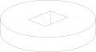Builder mode
This time we can first create a 2D
BuildSketchadding aCircleand a subtractedRectangle`and then useBuildPart’sextrude()feature.length, width, thickness = 80.0, 60.0, 10.0 with BuildPart() as ex3: with BuildSketch() as ex3_sk: Circle(width) Rectangle(length / 2, width / 2, mode=Mode.SUBTRACT) extrude(amount=2 * thickness)
Algebra mode
4. Building Profiles using lines and arcs
Sometimes you need to build complex profiles using lines and arcs. This example builds a prismatic solid from 2D operations. It is not necessary to create variables for the line segments, but it will be useful in a later example.
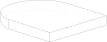Builder mode
BuildSketchoperates on closed Faces, and the operationmake_face()is used to convert the pending line segments fromBuildLineinto a closed Face.length, width, thickness = 80.0, 60.0, 10.0 with BuildPart() as ex4: with BuildSketch() as ex4_sk: with BuildLine() as ex4_ln: l1 = Line((0, 0), (length, 0)) l2 = Line((length, 0), (length, width)) l3 = ThreePointArc((length, width), (width, width * 1.5), (0.0, width)) l4 = Line((0.0, width), (0, 0)) make_face() extrude(amount=thickness)
Algebra mode
We start with an empty
Curveand add lines to it (note thatCurve() + [line1, line2, line3]is much more efficient thanline1 + line2 + line3, see Performance considerations in algebra mode). The operationmake_face()is used to convert the line segments into a Face.length, width, thickness = 80.0, 60.0, 10.0 lines = Curve() + [ Line((0, 0), (length, 0)), Line((length, 0), (length, width)), ThreePointArc((length, width), (width, width * 1.5), (0.0, width)), Line((0.0, width), (0, 0)), ] sk4 = make_face(lines) ex4 = extrude(sk4, thickness)
Note that to build a closed face it requires line segments that form a closed shape.
5. Moving the current working point
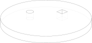Builder mode
Using
Locationswe can place one (or multiple) objects at one (or multiple) places.a, b, c, d = 90, 45, 15, 7.5 with BuildPart() as ex5: with BuildSketch() as ex5_sk: Circle(a) with Locations((b, 0.0)): Rectangle(c, c, mode=Mode.SUBTRACT) with Locations((0, b)): Circle(d, mode=Mode.SUBTRACT) extrude(amount=c)
Algebra mode
Using the pattern
Pos(x, y, z=0) * obj(withgeometry.Pos) we can move an object to the provided position. UsingRot(x_angle, y_angle, z_angle) * obj(withgeometry.Rot) would rotate the object.a, b, c, d = 90, 45, 15, 7.5 sk5 = Circle(a) - Pos(b, 0.0) * Rectangle(c, c) - Pos(0.0, b) * Circle(d) ex5 = extrude(sk5, c)
6. Using Point Lists
Sometimes you need to create a number of features at various
Locations.
Builder mode
You can use a list of points to construct multiple objects at once.
a, b, c = 80, 60, 10 with BuildPart() as ex6: with BuildSketch() as ex6_sk: Circle(a) with Locations((b, 0), (0, b), (-b, 0), (0, -b)): Circle(c, mode=Mode.SUBTRACT) extrude(amount=c)
Algebra mode
You can use loops to iterate over these Locations or list comprehensions as in the example.
The algebra operations are vectorized, which means
obj - [obj1, obj2, obj3]is short forobj - obj1 - obj2 - ob3(and more efficient, see Performance considerations in algebra mode).a, b, c = 80, 60, 10 sk6 = [loc * Circle(c) for loc in Locations((b, 0), (0, b), (-b, 0), (0, -b))] ex6 = extrude(Circle(a) - sk6, c)
7. Polygons
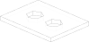Builder mode
You can create
RegularPolygonfor each stack point if you would like.a, b, c = 60, 80, 5 with BuildPart() as ex7: with BuildSketch() as ex7_sk: Rectangle(a, b) with Locations((0, 3 * c), (0, -3 * c)): RegularPolygon(radius=2 * c, side_count=6, mode=Mode.SUBTRACT) extrude(amount=c)
Algebra mode
You can apply locations to
RegularPolygoninstances for each location via loops or list comprehensions.a, b, c = 60, 80, 5 polygons = [ loc * RegularPolygon(radius=2 * c, side_count=6) for loc in Locations((0, 3 * c), (0, -3 * c)) ] sk7 = Rectangle(a, b) - polygons ex7 = extrude(sk7, amount=c)
8. Polylines
Polyline allows creating a shape from a large number
of chained points connected by lines. This example uses a polyline to create
one half of an i-beam shape, which is mirror() ed to
create the final profile.
Builder mode
(L, H, W, t) = (100.0, 20.0, 20.0, 1.0) pts = [ (0, H / 2.0), (W / 2.0, H / 2.0), (W / 2.0, (H / 2.0 - t)), (t / 2.0, (H / 2.0 - t)), (t / 2.0, (t - H / 2.0)), (W / 2.0, (t - H / 2.0)), (W / 2.0, H / -2.0), (0, H / -2.0), ] with BuildPart() as ex8: with BuildSketch(Plane.YZ) as ex8_sk: with BuildLine() as ex8_ln: Polyline(pts) mirror(ex8_ln.line, about=Plane.YZ) make_face() extrude(amount=L)
Algebra mode
(L, H, W, t) = (100.0, 20.0, 20.0, 1.0) pts = [ (0, H / 2.0), (W / 2.0, H / 2.0), (W / 2.0, (H / 2.0 - t)), (t / 2.0, (H / 2.0 - t)), (t / 2.0, (t - H / 2.0)), (W / 2.0, (t - H / 2.0)), (W / 2.0, H / -2.0), (0, H / -2.0), ] ln = Polyline(pts) ln += mirror(ln, Plane.YZ) sk8 = make_face(Plane.YZ * ln) ex8 = extrude(sk8, -L).clean()
9. Selectors, Fillets, and Chamfers
This example introduces multiple useful and important concepts. Firstly chamfer()
and fillet() can be used to “bevel” and “round” edges respectively. Secondly,
these two methods require an edge or a list of edges to operate on. To select all
edges, you could simply pass in ex9.edges().
Builder mode
length, width, thickness = 80.0, 60.0, 10.0 with BuildPart() as ex9: Box(length, width, thickness) chamfer(ex9.edges().group_by(Axis.Z)[-1], length=4) fillet(ex9.edges().filter_by(Axis.Z), radius=5)
Algebra mode
length, width, thickness = 80.0, 60.0, 10.0 ex9 = Part() + Box(length, width, thickness) ex9 = chamfer(ex9.edges().group_by(Axis.Z)[-1], length=4) ex9 = fillet(ex9.edges().filter_by(Axis.Z), radius=5)
Note that group_by() (Axis.Z) returns a list of lists of edges that is grouped by
their z-position. In this case we want to use the [-1] group which, by convention, will
be the highest z-dimension group.
10. Select Last and Hole
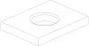Builder mode
Using
Select.LASTyou can select the most recently modified edges. It is used to perform afillet()in this example. This example also makes use ofHolewhich automatically cuts through the entire part.length, width, thickness = 80.0, 60.0, 10.0 with BuildPart() as ex10: Box(length, width, thickness) Hole(radius=width / 4) fillet(ex10.edges(Select.LAST).group_by(Axis.Z)[-1], radius=2)
Algebra mode
Using the pattern
snapshot = obj.edges()before andlast_edges = obj.edges() - snapshotafter an operation allows to select the most recently modified edges (same forfaces,vertices, …). It is used to perform afillet()in this example. This example also makes use ofHole. Different to the context mode, you have to add thedepthof the whole.ex10 = Part() + Box(length, width, thickness) snapshot = ex10.edges() ex10 -= Hole(radius=width / 4, depth=thickness) last_edges = ex10.edges() - snapshot ex10 = fillet(last_edges.group_by(Axis.Z)[-1], 2)
11. Use a face as a plane for BuildSketch and introduce GridLocations
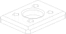Builder mode
BuildSketchaccepts a Plane or a Face, so in this case we locate the Sketch on the top of the part. Note that the face used as input to BuildSketch needs to be Planar or unpredictable behavior can result. AdditionallyGridLocationscan be used to create a grid of points that are simultaneously used to place 4 pentagons.Lastly,
extrude()can be used with a negative amount andMode.SUBTRACTto cut these from the parent.length, width, thickness = 80.0, 60.0, 10.0 with BuildPart() as ex11: Box(length, width, thickness) chamfer(ex11.edges().group_by(Axis.Z)[-1], length=4) fillet(ex11.edges().filter_by(Axis.Z), radius=5) Hole(radius=width / 4) fillet(ex11.edges(Select.LAST).sort_by(Axis.Z)[-1], radius=2) with BuildSketch(ex11.faces().sort_by(Axis.Z)[-1]) as ex11_sk: with GridLocations(length / 2, width / 2, 2, 2): RegularPolygon(radius=5, side_count=5) extrude(amount=-thickness, mode=Mode.SUBTRACT)
Algebra mode
The pattern
plane * objcan be used to locate an object on a plane. Furthermore, the patternplane * location * objfirst places the object on a plane and then moves it relative to plane according tolocation.GridLocationscreates a grid of points that can be used in loops or list comprehensions as described earlier.Lastly,
extrude()can be used with a negative amount and cut (-) from the parent.length, width, thickness = 80.0, 60.0, 10.0 ex11 = Part() + Box(length, width, thickness) ex11 = chamfer(ex11.edges().group_by()[-1], 4) ex11 = fillet(ex11.edges().filter_by(Axis.Z), 5) last = ex11.edges() ex11 -= Hole(radius=width / 4, depth=thickness) ex11 = fillet((ex11.edges() - last).sort_by().last, 2) plane = Plane(ex11.faces().sort_by().last) polygons = Sketch() + [ plane * loc * RegularPolygon(radius=5, side_count=5) for loc in GridLocations(length / 2, width / 2, 2, 2) ] ex11 -= extrude(polygons, -thickness)
Note that the direction implied by positive or negative inputs to amount is relative to the
normal direction of the face or plane. As a result of this, unexpected behavior can occur
if the extrude direction and mode/operation (ADD / + or SUBTRACT / -) are not correctly set.
12. Defining an Edge with a Spline
This example defines a side using a spline curve through a collection of points. Useful when you have an edge that needs a complex profile.
Builder mode
pts = [ (55, 30), (50, 35), (40, 30), (30, 20), (20, 25), (10, 20), (0, 20), ] with BuildPart() as ex12: with BuildSketch() as ex12_sk: with BuildLine() as ex12_ln: l1 = Spline(pts) l2 = Line((55, 30), (60, 0)) l3 = Line((60, 0), (0, 0)) l4 = Line((0, 0), (0, 20)) make_face() extrude(amount=10)
Algebra mode
pts = [ (55, 30), (50, 35), (40, 30), (30, 20), (20, 25), (10, 20), (0, 20), ] l1 = Spline(pts) l2 = Line(l1 @ 0, (60, 0)) l3 = Line(l2 @ 1, (0, 0)) l4 = Line(l3 @ 1, l1 @ 1) sk12 = make_face([l1, l2, l3, l4]) ex12 = extrude(sk12, 10)
13. CounterBoreHoles, CounterSinkHoles and PolarLocations
Counter-sink and counter-bore holes are useful for creating recessed areas for fasteners.
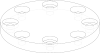Builder mode
We use a face to establish a location for
Locations.a, b = 40, 4 with BuildPart() as ex13: Cylinder(radius=50, height=10) with Locations(ex13.faces().sort_by(Axis.Z)[-1]): with PolarLocations(radius=a, count=4): CounterSinkHole(radius=b, counter_sink_radius=2 * b) with PolarLocations(radius=a, count=4, start_angle=45, angular_range=360): CounterBoreHole(radius=b, counter_bore_radius=2 * b, counter_bore_depth=b)
Algebra mode
We use a face to establish a plane that is used later in the code for locating objects onto this plane.
a, b = 40, 4 ex13 = Cylinder(radius=50, height=10) plane = Plane(ex13.faces().sort_by().last) ex13 -= ( plane * PolarLocations(radius=a, count=4) * CounterSinkHole(radius=b, counter_sink_radius=2 * b, depth=10) ) ex13 -= ( plane * PolarLocations(radius=a, count=4, start_angle=45, angular_range=360) * CounterBoreHole( radius=b, counter_bore_radius=2 * b, depth=10, counter_bore_depth=b ) )
PolarLocations creates a list of points that are radially distributed.
14. Position on a line with ‘@’, ‘%’ and introduce Sweep
build123d includes a feature for finding the position along a line segment. This
is normalized between 0 and 1 and can be accessed using the position_at() (@) operator.
Similarly the tangent_at() (%) operator returns the line direction at a given point.
These two features are very powerful for chaining line segments together without having to repeat dimensions again and again, which is error prone, time consuming, and more difficult to maintain. The pending faces must lie on the path, please see example 37 for a way to make this placement easier.
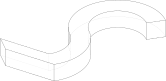Builder mode
The
sweep()method takes any pending faces and sweeps them through the provided path (in this case the path is taken from the pending edges fromex14_ln).revolve()requires a single connected wire.a, b = 40, 20 with BuildPart() as ex14: with BuildLine() as ex14_ln: l1 = JernArc(start=(0, 0), tangent=(0, 1), radius=a, arc_size=180) l2 = JernArc(start=l1 @ 1, tangent=l1 % 1, radius=a, arc_size=-90) l3 = Line(l2 @ 1, l2 @ 1 + (-a, a)) with BuildSketch(Plane.XZ) as ex14_sk: Rectangle(b, b) sweep()
Algebra mode
The
sweep()method takes any faces and sweeps them through the provided path (in this case the path is taken fromex14_ln).a, b = 40, 20 l1 = JernArc(start=(0, 0), tangent=(0, 1), radius=a, arc_size=180) l2 = JernArc(start=l1 @ 1, tangent=l1 % 1, radius=a, arc_size=-90) l3 = Line(l2 @ 1, l2 @ 1 + (-a, a)) ex14_ln = l1 + l2 + l3 sk14 = Plane.XZ * Rectangle(b, b) ex14 = sweep(sk14, path=ex14_ln)
It is also possible to use tuple or Vector addition (and other vector math operations)
as seen in the l3 variable.
15. Mirroring Symmetric Geometry
Here mirror is used on the BuildLine to create a symmetric shape with fewer line segment commands. Additionally the ‘@’ operator is used to simplify the line segment commands.
(l4 @ 1).Y is used to extract the y-component of the l4 @ 1 vector.
Builder mode
a, b, c = 80, 40, 20 with BuildPart() as ex15: with BuildSketch() as ex15_sk: with BuildLine() as ex15_ln: l1 = Line((0, 0), (a, 0)) l2 = Line(l1 @ 1, l1 @ 1 + (0, b)) l3 = Line(l2 @ 1, l2 @ 1 + (-c, 0)) l4 = Line(l3 @ 1, l3 @ 1 + (0, -c)) l5 = Line(l4 @ 1, (0, (l4 @ 1).Y)) mirror(ex15_ln.line, about=Plane.YZ) make_face() extrude(amount=c)
Algebra mode
Combine lines via the pattern
Curve() + [l1, l2, l3, l4, l5]a, b, c = 80, 40, 20 l1 = Line((0, 0), (a, 0)) l2 = Line(l1 @ 1, l1 @ 1 + (0, b)) l3 = Line(l2 @ 1, l2 @ 1 + (-c, 0)) l4 = Line(l3 @ 1, l3 @ 1 + (0, -c)) l5 = Line(l4 @ 1, (0, (l4 @ 1).Y)) ln = Curve() + [l1, l2, l3, l4, l5] ln += mirror(ln, Plane.YZ) sk15 = make_face(ln) ex15 = extrude(sk15, c)
16. Mirroring 3D Objects
Mirror can also be used with BuildPart (and BuildSketch) to mirror 3D objects.
The Plane.offset() method shifts the plane in the normal direction (positive or negative).
Builder mode
length, width, thickness = 80.0, 60.0, 10.0 with BuildPart() as ex16_single: with BuildSketch(Plane.XZ) as ex16_sk: Rectangle(length, width) fillet(ex16_sk.vertices(), radius=length / 10) with GridLocations(x_spacing=length / 4, y_spacing=0, x_count=3, y_count=1): Circle(length / 12, mode=Mode.SUBTRACT) Rectangle(length, width, align=(Align.MIN, Align.MIN), mode=Mode.SUBTRACT) extrude(amount=length) with BuildPart() as ex16: add(ex16_single.part) mirror(ex16_single.part, about=Plane.XY.offset(width)) mirror(ex16_single.part, about=Plane.YX.offset(width)) mirror(ex16_single.part, about=Plane.YZ.offset(width)) mirror(ex16_single.part, about=Plane.YZ.offset(-width))
Algebra mode
length, width, thickness = 80.0, 60.0, 10.0 sk16 = Rectangle(length, width) sk16 = fillet(sk16.vertices(), length / 10) circles = [loc * Circle(length / 12) for loc in GridLocations(length / 4, 0, 3, 1)] sk16 = sk16 - circles - Rectangle(length, width, align=(Align.MIN, Align.MIN)) ex16_single = extrude(Plane.XZ * sk16, length) planes = [ Plane.XY.offset(width), Plane.YX.offset(width), Plane.YZ.offset(width), Plane.YZ.offset(-width), ] objs = [mirror(ex16_single, plane) for plane in planes] ex16 = ex16_single + objs
17. Mirroring From Faces
Here we select the farthest face in the Y-direction and turn it into a Plane using the
Plane() class.
Builder mode
a, b = 30, 20 with BuildPart() as ex17: with BuildSketch() as ex17_sk: RegularPolygon(radius=a, side_count=5) extrude(amount=b) mirror(ex17.part, about=Plane(ex17.faces().group_by(Axis.Y)[0][0]))
Algebra mode
a, b = 30, 20 sk17 = RegularPolygon(radius=a, side_count=5) ex17 = extrude(sk17, amount=b) ex17 += mirror(ex17, Plane(ex17.faces().sort_by(Axis.Y).first))
18. Creating Workplanes on Faces
Here we start with an earlier example, select the top face, draw a rectangle and then use Extrude with a negative distance.
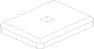Builder mode
We then use
Mode.SUBTRACTto cut it out from the main body.length, width, thickness = 80.0, 60.0, 10.0 a, b = 4, 5 with BuildPart() as ex18: Box(length, width, thickness) chamfer(ex18.edges().group_by(Axis.Z)[-1], length=a) fillet(ex18.edges().filter_by(Axis.Z), radius=b) with BuildSketch(ex18.faces().sort_by(Axis.Z)[-1]): Rectangle(2 * b, 2 * b) extrude(amount=-thickness, mode=Mode.SUBTRACT)
Algebra mode
We then use
-=to cut it out from the main body.length, width, thickness = 80.0, 60.0, 10.0 a, b = 4, 5 ex18 = Part() + Box(length, width, thickness) ex18 = chamfer(ex18.edges().group_by()[-1], a) ex18 = fillet(ex18.edges().filter_by(Axis.Z), b) sk18 = Plane(ex18.faces().sort_by().first) * Rectangle(2 * b, 2 * b) ex18 -= extrude(sk18, -thickness)
19. Locating a workplane on a vertex
Here a face is selected and two different strategies are used to select vertices.
Firstly vtx uses group_by() and Axis.X to select a particular vertex. The second strategy uses a custom
defined Axis vtx2Axis that is pointing roughly in the direction of a vertex to select, and then sort_by()
this custom Axis.
Builder mode
Then the X and Y positions of these vertices are selected and passed to
Locationsas center points for two circles that cut through the main part. Note that if you passed the variablevtxdirectly toLocationsthen the part would be offset from the workplane by the vertex z-position.length, thickness = 80.0, 10.0 with BuildPart() as ex19: with BuildSketch() as ex19_sk: RegularPolygon(radius=length / 2, side_count=7) extrude(amount=thickness) topf = ex19.faces().sort_by(Axis.Z)[-1] vtx = topf.vertices().group_by(Axis.X)[-1][0] vtx2Axis = Axis((0, 0, 0), (-1, -0.5, 0)) vtx2 = topf.vertices().sort_by(vtx2Axis)[-1] with BuildSketch(topf) as ex19_sk2: with Locations((vtx.X, vtx.Y), (vtx2.X, vtx2.Y)): Circle(radius=length / 8) extrude(amount=-thickness, mode=Mode.SUBTRACT)
Algebra mode
Then the X and Y positions of these vertices are selected and used to move two circles that cut through the main part. Note that if you passed the variable
vtxdirectly toPosthen the part would be offset from the workplane by the vertex z-position.length, thickness = 80.0, 10.0 ex19_sk = RegularPolygon(radius=length / 2, side_count=7) ex19 = extrude(ex19_sk, thickness) topf = ex19.faces().sort_by().last vtx = topf.vertices().group_by(Axis.X)[-1][0] vtx2Axis = Axis((0, 0, 0), (-1, -0.5, 0)) vtx2 = topf.vertices().sort_by(vtx2Axis)[-1] ex19_sk2 = Circle(radius=length / 8) ex19_sk2 = Pos(vtx.X, vtx.Y) * ex19_sk2 + Pos(vtx2.X, vtx2.Y) * ex19_sk2 ex19 -= extrude(ex19_sk2, thickness)
20. Offset Sketch Workplane
The plane variable is set to be coincident with the farthest face in the
negative x-direction. The resulting Plane is offset from the original position.
Builder mode
length, width, thickness = 80.0, 60.0, 10.0 with BuildPart() as ex20: Box(length, width, thickness) plane = Plane(ex20.faces().group_by(Axis.X)[0][0]) with BuildSketch(plane.offset(2 * thickness)): Circle(width / 3) extrude(amount=width)
Algebra mode
length, width, thickness = 80.0, 60.0, 10.0 ex20 = Box(length, width, thickness) plane = Plane(ex20.faces().sort_by(Axis.X).first).offset(2 * thickness) sk20 = plane * Circle(width / 3) ex20 += extrude(sk20, width)
21. Create a Workplanes in the center of another shape
One cylinder is created, and then the origin and z_dir of that part are used to create a new Plane for positioning another cylinder perpendicular and halfway along the first.
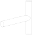Builder mode
width, length = 10.0, 60.0 with BuildPart() as ex21: with BuildSketch() as ex21_sk: Circle(width / 2) extrude(amount=length) with BuildSketch(Plane(origin=ex21.part.center(), z_dir=(-1, 0, 0))): Circle(width / 2) extrude(amount=length)
Algebra mode
width, length = 10.0, 60.0 ex21 = extrude(Circle(width / 2), length) plane = Plane(origin=ex21.center(), z_dir=(-1, 0, 0)) ex21 += plane * extrude(Circle(width / 2), length)
22. Rotated Workplanes
It is also possible to create a rotated workplane, building upon some of the concepts in an earlier example.
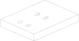Builder mode
Use the
rotated()method to rotate the workplane.length, width, thickness = 80.0, 60.0, 10.0 with BuildPart() as ex22: Box(length, width, thickness) pln = Plane(ex22.faces().group_by(Axis.Z)[0][0]).rotated((0, -50, 0)) with BuildSketch(pln) as ex22_sk: with GridLocations(length / 4, width / 4, 2, 2): Circle(thickness / 4) extrude(amount=-100, both=True, mode=Mode.SUBTRACT)
Algebra mode
Use the operator
*to relocate the plane (post-multiplication!).length, width, thickness = 80.0, 60.0, 10.0 ex22 = Box(length, width, thickness) plane = Plane((ex22.faces().group_by(Axis.Z)[0])[0]) * Rot(0, 50, 0) holes = Sketch() + [ plane * loc * Circle(thickness / 4) for loc in GridLocations(length / 4, width / 4, 2, 2) ] ex22 -= extrude(holes, -100, both=True)
GridLocations places 4 Circles on 4 points on this rotated workplane, and then the Circles are
extruded in the “both” (positive and negative) normal direction.
23. Revolve
Here we build a sketch with a Polyline,
Line, and a Circle. It is
absolutely critical that the sketch is only on one side of the axis of rotation
before Revolve is called. To that end, split is used with Plane.ZY to keep
only one side of the Sketch.
It is highly recommended to view your sketch before you attempt to call revolve.
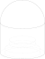Builder mode
pts = [ (-25, 35), (-25, 0), (-20, 0), (-20, 5), (-15, 10), (-15, 35), ] with BuildPart() as ex23: with BuildSketch(Plane.XZ) as ex23_sk: with BuildLine() as ex23_ln: l1 = Polyline(pts) l2 = Line(l1 @ 1, l1 @ 0) make_face() with Locations((0, 35)): Circle(25) split(bisect_by=Plane.ZY) revolve(axis=Axis.Z)
Algebra mode
pts = [ (-25, 35), (-25, 0), (-20, 0), (-20, 5), (-15, 10), (-15, 35), ] l1 = Polyline(pts) l2 = Line(l1 @ 1, l1 @ 0) sk23 = make_face([l1, l2]) sk23 += Pos(0, 35) * Circle(25) sk23 = Plane.XZ * split(sk23, bisect_by=Plane.ZY) ex23 = revolve(sk23, Axis.Z)
24. Loft
Loft is a very powerful tool that can be used to join dissimilar shapes. In this case we make a
conical-like shape from a circle and a rectangle that is offset vertically. In this case
loft() automatically takes the pending faces that were added by the two BuildSketches.
Loft can behave unexpectedly when the input faces are not parallel to each other.
Builder mode
length, width, thickness = 80.0, 60.0, 10.0 with BuildPart() as ex24: Box(length, length, thickness) with BuildSketch(ex24.faces().group_by(Axis.Z)[0][0]) as ex24_sk: Circle(length / 3) with BuildSketch(ex24_sk.faces()[0].offset(length / 2)) as ex24_sk2: Rectangle(length / 6, width / 6) loft()
Algebra mode
length, width, thickness = 80.0, 60.0, 10.0 ex24 = Box(length, length, thickness) plane = Plane(ex24.faces().sort_by().last) faces = Sketch() + [ plane * Circle(length / 3), plane.offset(length / 2) * Rectangle(length / 6, width / 6), ] ex24 += loft(faces)
25. Offset Sketch
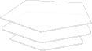Builder mode
BuildSketch faces can be transformed with a 2D
offset().rad, offs = 50, 10 with BuildPart() as ex25: with BuildSketch() as ex25_sk1: RegularPolygon(radius=rad, side_count=5) with BuildSketch(Plane.XY.offset(15)) as ex25_sk2: RegularPolygon(radius=rad, side_count=5) offset(amount=offs) with BuildSketch(Plane.XY.offset(30)) as ex25_sk3: RegularPolygon(radius=rad, side_count=5) offset(amount=offs, kind=Kind.INTERSECTION) extrude(amount=1)
Algebra mode
Sketch faces can be transformed with a 2D
offset().rad, offs = 50, 10 sk25_1 = RegularPolygon(radius=rad, side_count=5) sk25_2 = Plane.XY.offset(15) * RegularPolygon(radius=rad, side_count=5) sk25_2 = offset(sk25_2, offs) sk25_3 = Plane.XY.offset(30) * RegularPolygon(radius=rad, side_count=5) sk25_3 = offset(sk25_3, offs, kind=Kind.INTERSECTION) sk25 = Sketch() + [sk25_1, sk25_2, sk25_3] ex25 = extrude(sk25, 1)
They can be offset inwards or outwards, and with different techniques for extending the
corners (see Kind in the Offset docs).
26. Offset Part To Create Thin features
Parts can also be transformed using an offset, but in this case with
a 3D offset(). Also commonly known as a shell, this allows creating thin walls
using very few operations. This can also be offset inwards or outwards. Faces can be selected to be
“deleted” using the openings parameter of offset().
Note that self intersecting edges and/or faces can break both 2D and 3D offsets.
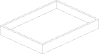Builder mode
length, width, thickness, wall = 80.0, 60.0, 10.0, 2.0 with BuildPart() as ex26: Box(length, width, thickness) topf = ex26.faces().sort_by(Axis.Z)[-1] offset(amount=-wall, openings=topf)
Algebra mode
length, width, thickness, wall = 80.0, 60.0, 10.0, 2.0 ex26 = Box(length, width, thickness) topf = ex26.faces().sort_by().last ex26 = offset(ex26, amount=-wall, openings=topf)
27. Splitting an Object
You can split an object using a plane, and retain either or both halves. In this case we select a face and offset half the width of the box.
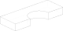Builder mode
length, width, thickness = 80.0, 60.0, 10.0 with BuildPart() as ex27: Box(length, width, thickness) with BuildSketch(ex27.faces().sort_by(Axis.Z)[0]) as ex27_sk: Circle(width / 4) extrude(amount=-thickness, mode=Mode.SUBTRACT) split(bisect_by=Plane(ex27.faces().sort_by(Axis.Y)[-1]).offset(-width / 2))
Algebra mode
length, width, thickness = 80.0, 60.0, 10.0 ex27 = Box(length, width, thickness) sk27 = Plane(ex27.faces().sort_by().first) * Circle(width / 4) ex27 -= extrude(sk27, -thickness) ex27 = split(ex27, Plane(ex27.faces().sort_by(Axis.Y).last).offset(-width / 2))
28. Locating features based on Faces
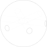Builder mode
We create a triangular prism with
Mode.PRIVATEand then later use the faces of this object to cut holes in a sphere.width, thickness = 80.0, 10.0 with BuildPart() as ex28: with BuildSketch() as ex28_sk: RegularPolygon(radius=width / 4, side_count=3) ex28_ex = extrude(amount=thickness, mode=Mode.PRIVATE) midfaces = ex28_ex.faces().group_by(Axis.Z)[1] Sphere(radius=width / 2) for face in midfaces: with Locations(face): Hole(thickness / 2)
Algebra mode
We create a triangular prism and then later use the faces of this object to cut holes in a sphere.
width, thickness = 80.0, 10.0 sk28 = RegularPolygon(radius=width / 4, side_count=3) tmp28 = extrude(sk28, thickness) ex28 = Sphere(radius=width / 2) for p in [Plane(face) for face in tmp28.faces().group_by(Axis.Z)[1]]: ex28 -= p * Hole(thickness / 2, depth=width)
We are able to create multiple workplanes by looping over the list of faces.
29. The Classic OCC Bottle
build123d is based on the OpenCascade.org (OCC) modeling Kernel. Those who are familiar with OCC know about the famous ‘bottle’ example. We use a 3D Offset and the openings parameter to create the bottle opening.
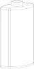Builder mode
L, w, t, b, h, n = 60.0, 18.0, 9.0, 0.9, 90.0, 6.0 with BuildPart() as ex29: with BuildSketch(Plane.XY.offset(-b)) as ex29_ow_sk: with BuildLine() as ex29_ow_ln: l1 = Line((0, 0), (0, w / 2)) l2 = ThreePointArc(l1 @ 1, (L / 2.0, w / 2.0 + t), (L, w / 2.0)) l3 = Line(l2 @ 1, ((l2 @ 1).X, 0, 0)) mirror(ex29_ow_ln.line) make_face() extrude(amount=h + b) fillet(ex29.edges(), radius=w / 6) with BuildSketch(ex29.faces().sort_by(Axis.Z)[-1]): Circle(t) extrude(amount=n) necktopf = ex29.faces().sort_by(Axis.Z)[-1] offset(ex29.solids()[0], amount=-b, openings=necktopf)
Algebra mode
L, w, t, b, h, n = 60.0, 18.0, 9.0, 0.9, 90.0, 8.0 l1 = Line((0, 0), (0, w / 2)) l2 = ThreePointArc(l1 @ 1, (L / 2.0, w / 2.0 + t), (L, w / 2.0)) l3 = Line(l2 @ 1, ((l2 @ 1).X, 0, 0)) ln29 = l1 + l2 + l3 ln29 += mirror(ln29) sk29 = make_face(ln29) ex29 = extrude(sk29, -(h + b)) ex29 = fillet(ex29.edges(), radius=w / 6) neck = Plane(ex29.faces().sort_by().last) * Circle(t) ex29 += extrude(neck, n) necktopf = ex29.faces().sort_by().last ex29 = offset(ex29, -b, openings=necktopf)
30. Bezier Curve
Here pts is used as an input to both Polyline and
Bezier and wts to Bezier alone. These two together
create a closed line that is made into a face and extruded.
Builder mode
pts = [ (0, 0), (20, 20), (40, 0), (0, -40), (-60, 0), (0, 100), (100, 0), ] wts = [ 1.0, 1.0, 2.0, 3.0, 4.0, 2.0, 1.0, ] with BuildPart() as ex30: with BuildSketch() as ex30_sk: with BuildLine() as ex30_ln: l0 = Polyline(pts) l1 = Bezier(pts, weights=wts) make_face() extrude(amount=10)
Algebra mode
pts = [ (0, 0), (20, 20), (40, 0), (0, -40), (-60, 0), (0, 100), (100, 0), ] wts = [ 1.0, 1.0, 2.0, 3.0, 4.0, 2.0, 1.0, ] ex30_ln = Polyline(pts) + Bezier(pts, weights=wts) ex30_sk = make_face(ex30_ln) ex30 = extrude(ex30_sk, -10)
31. Nesting Locations
Locations contexts can be nested to create groups of shapes. Here 24 triangles, 6 squares, and
1 hexagon are created and then extruded. Notably PolarLocations
rotates any “children” groups by default.
Builder mode
a, b, c = 80.0, 5.0, 3.0 with BuildPart() as ex31: with BuildSketch() as ex31_sk: with PolarLocations(a / 2, 6): with GridLocations(3 * b, 3 * b, 2, 2): RegularPolygon(b, 3) RegularPolygon(b, 4) RegularPolygon(3 * b, 6, rotation=30) extrude(amount=c)
Algebra mode
a, b, c = 80.0, 5.0, 3.0 ex31 = Rot(Z=30) * RegularPolygon(3 * b, 6) ex31 += PolarLocations(a / 2, 6) * ( RegularPolygon(b, 4) + GridLocations(3 * b, 3 * b, 2, 2) * RegularPolygon(b, 3) ) ex31 = extrude(ex31, 3)
32. Python For-Loop
In this example, a standard python for-loop is used along with a list of faces extracted from a sketch
to progressively modify the extrusion amount. There are 7 faces in the sketch, so this results in 7
separate calls to extrude().
Builder mode
Mode.PRIVATEis used inBuildSketchto avoid adding these faces until the for-loop.a, b, c = 80.0, 10.0, 1.0 with BuildPart() as ex32: with BuildSketch(mode=Mode.PRIVATE) as ex32_sk: RegularPolygon(2 * b, 6, rotation=30) with PolarLocations(a / 2, 6): RegularPolygon(b, 4) for idx, obj in enumerate(ex32_sk.sketch.faces()): add(obj) extrude(amount=c + 3 * idx)
Algebra mode
a, b, c = 80.0, 10.0, 1.0 ex32_sk = RegularPolygon(2 * b, 6, rotation=30) ex32_sk += PolarLocations(a / 2, 6) * RegularPolygon(b, 4) ex32 = Part() + [extrude(obj, c + 3 * idx) for idx, obj in enumerate(ex32_sk.faces())]
33. Python Function and For-Loop
Building on the previous example, a standard python function is used to return a sketch as a function of several inputs to progressively modify the size of each square.
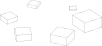Builder mode
The function returns a
BuildSketch.a, b, c = 80.0, 5.0, 1.0 def square(rad, loc): with BuildSketch() as sk: with Locations(loc): RegularPolygon(rad, 4) return sk.sketch with BuildPart() as ex33: with BuildSketch(mode=Mode.PRIVATE) as ex33_sk: locs = PolarLocations(a / 2, 6) for i, j in enumerate(locs): add(square(b + 2 * i, j)) for idx, obj in enumerate(ex33_sk.sketch.faces()): add(obj) extrude(amount=c + 2 * idx)
Algebra mode
The function returns a
Sketchobject.a, b, c = 80.0, 5.0, 1.0 def square(rad, loc): return loc * RegularPolygon(rad, 4) ex33 = Part() + [ extrude(square(b + 2 * i, loc), c + 2 * i) for i, loc in enumerate(PolarLocations(a / 2, 6)) ]
34. Embossed and Debossed Text
Builder mode
The text “Hello” is placed on top of a rectangle and embossed (raised) by placing a BuildSketch on the top face (
topf). Note thatAlignis used to control the text placement. We re-use thetopfvariable to select the same face and deboss (indented) the text “World”. Note that if we simply ranBuildSketch(ex34.faces().sort_by(Axis.Z)[-1])for bothex34_sk1 & 2it would incorrectly locate the 2nd “World” text on the top of the “Hello” text.length, width, thickness, fontsz, fontht = 80.0, 60.0, 10.0, 25.0, 4.0 with BuildPart() as ex34: Box(length, width, thickness) topf = ex34.faces().sort_by(Axis.Z)[-1] with BuildSketch(topf) as ex34_sk: Text("Hello", font_size=fontsz, align=(Align.CENTER, Align.MIN)) extrude(amount=fontht) with BuildSketch(topf) as ex34_sk2: Text("World", font_size=fontsz, align=(Align.CENTER, Align.MAX)) extrude(amount=-fontht, mode=Mode.SUBTRACT)
Algebra mode
The text “Hello” is placed on top of a rectangle and embossed (raised) by placing a sketch on the top face (
topf). Note thatAlignis used to control the text placement. We re-use thetopfvariable to select the same face and deboss (indented) the text “World”.length, width, thickness, fontsz, fontht = 80.0, 60.0, 10.0, 25.0, 4.0 ex34 = Box(length, width, thickness) plane = Plane(ex34.faces().sort_by().last) ex34_sk = plane * Text("Hello", font_size=fontsz, align=(Align.CENTER, Align.MIN)) ex34 += extrude(ex34_sk, amount=fontht) ex34_sk2 = plane * Text("World", font_size=fontsz, align=(Align.CENTER, Align.MAX)) ex34 -= extrude(ex34_sk2, amount=-fontht)
35. Slots
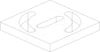Builder mode
Here we create a
SlotCenterToCenterand then use aBuildLineandRadiusArcto create an arc for two instances ofSlotArc.length, width, thickness = 80.0, 60.0, 10.0 with BuildPart() as ex35: Box(length, length, thickness) topf = ex35.faces().sort_by(Axis.Z)[-1] with BuildSketch(topf) as ex35_sk: SlotCenterToCenter(width / 2, 10) with BuildLine(mode=Mode.PRIVATE) as ex35_ln: RadiusArc((-width / 2, 0), (0, width / 2), radius=width / 2) SlotArc(arc=ex35_ln.edges()[0], height=thickness, rotation=0) with BuildLine(mode=Mode.PRIVATE) as ex35_ln2: RadiusArc((0, -width / 2), (width / 2, 0), radius=-width / 2) SlotArc(arc=ex35_ln2.edges()[0], height=thickness, rotation=0) extrude(amount=-thickness, mode=Mode.SUBTRACT)
Algebra mode
Here we create a
SlotCenterToCenterand then use aRadiusArcto create an arc for two instances ofSlotArc.length, width, thickness = 80.0, 60.0, 10.0 ex35 = Box(length, length, thickness) plane = Plane(ex35.faces().sort_by().last) ex35_sk = SlotCenterToCenter(width / 2, 10) ex35_ln = RadiusArc((-width / 2, 0), (0, width / 2), radius=width / 2) ex35_sk += SlotArc(arc=ex35_ln.edges()[0], height=thickness) ex35_ln2 = RadiusArc((0, -width / 2), (width / 2, 0), radius=-width / 2) ex35_sk += SlotArc(arc=ex35_ln2.edges()[0], height=thickness) ex35 -= extrude(plane * ex35_sk, -thickness)
36. Extrude Until
Sometimes you will want to extrude until a given face that could be non planar or
where you might not know easily the distance you have to extrude to. In such
cases you can use extrude() Until
with Until.NEXT or Until.LAST.
Builder mode
rad, rev = 6, 50 with BuildPart() as ex36: with BuildSketch() as ex36_sk: with Locations((0, rev)): Circle(rad) revolve(axis=Axis.X, revolution_arc=180) with BuildSketch() as ex36_sk2: Rectangle(rad, rev) extrude(until=Until.NEXT)
Algebra mode
rad, rev = 6, 50 ex36_sk = Pos(0, rev) * Circle(rad) ex36 = revolve(axis=Axis.X, profiles=ex36_sk, revolution_arc=180) ex36_sk2 = Rectangle(rad, rev) ex36 += extrude(ex36_sk2, until=Until.NEXT, target=ex36)